Es ist 💩
Habt ihr euch schonmal eine Klobürste gekauft, die sich nach ein paar Benutzungen als „Griff ins Klo“ herausgestellt hat?
Wir waren vor ein paar Wochen auf der Suche nach einer neuen Klobürste. Im nahe gelegenen Supermarkt gibt es davon eine kleine Auswahl. Die Preisspanne geht dabei von echt billigen 99 Cent bis zu gehobenen 8,99 Euro für die Edelbürste mit Holzgriff. Das war uns dann doch zu teuer, aber eh! Wenn man, so wie ich, die ganze Zeit im Homeoffice verbringt, will man wenigstens gediegen die Zeit auf dem Klo verbringen, oder? Also haben wir nicht lange gezögert und zumindest fast 5 Euro für eine mittelteure Bürste ausgegeben.
Schick sah sie aus! Ein edler, metallener Stiel, wahrscheinlich eine gebürstete (haha) Alu-Oberfläche. Fühlte sich sehr hochwertig an. Damit putzt man doch gerne die Toilette nach einem erfolgreich abgeschlossenen Geschäft. Da weiß man, wofür man sein Geld ausgegeben hat. ... Jedenfalls nicht für so einen billigen Plastik-Stengel, wo man das Gefühl hat, dass er gleich abbricht, wenn man etwas stärker Schrubben muss.
Aber die Enttäuschung ließ leider nicht lange auf sich warten. Schon nach wenigen Benutzungen stellte sich heraus, dass der Bürstenkopf auf den Metallstiel aufgeschraubt war. Aufgeschraubt? Hat der Hersteller seine Bürste eigentlich selbst einmal getestet? Ich glaube nicht. Denn sonst hätte er bemerkt, dass alles, was sich zuschrauben lässt, auch wieder leicht abschrauben lässt! Warum kann man die Bürste an dieser Stelle nicht verkleben? Denn was bedeutet diese Fehlkonstruktion? Ganz einfach. Der festgeschraubte Bürstenkopf löst sich bei Benutzung und dreht sich beim Rubbeln an der Toilettenwand mit! So geht die Reibefunktion der Bürste flöten und ... die Bürste bürstet nur noch halb so gut. Was für ein Mist.
Aber es wurde noch schlimmer. Die Bürstenhaare lösten sich und schwammen nach Benutzung im Wasser der Kloschüssel. Waaaa. Wie schlecht kann eine Bürste eigentlich sein! Mikroplastik in der Schüssel! Die Plastikhaare werden beim Betätigen der Spülung einfach in die Kanalisation gespült. Da will man einfach nur eine saubere Toilette haben und ist so verantwortlich für Plastikvermüllung der Meere. So eine Scheiße!
Was also tun? Die Klobürste ist quasi brandneu gewesen, aber das benutzte Stück zur Supermarkt-Kasse bringen und sagen „Ich hätte die her gerne umgetauscht, denn sie putzt nicht wie sie soll.“? Keine gute Idee, oder?
Wir haben uns also einfach für einen Neukauf der billigen 99 Cent-Klobürste aus einem ungeschraubten, zusammenhängenden Plastikstab entschieden. Die tut was sie soll. Ohne Verlust von Bürstenhaaren. Geht doch. 💩
Das Setup - Datenexport
Die erste Frage, die zu klären war: Kann der Beschleunigungssensor und der GPS-Sensor des Smartphones parallel ausgelesen werden? Kurze Antwort: Ja, das geht über die App phyphox, erhältlich für Android und iOS, entwickelt von Mitarbeitern der RWTH Aachen. Mit Hilfe dieser App kann man auf viele Sensoren des Smartphones zugreifen. Die Daten werden live auf dem Display dargestellt und lassen sich später exportieren. Im Bild unten sieht man das Ergebnis einer etwa acht-sekündigen Messung, während das Test-Smartphone nacheinander jeweils in x-, y- und in z-Richtung mit der Hand hin und her bewegt wurde:
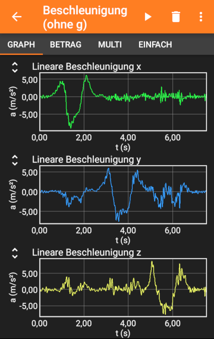Die Bewegung in z-Richtung stellt dabei die Bewegung senkrecht zum Bildschirm dar, so, als ob das Smartphone vom Tisch liegend hochgehoben und wieder nach unten gesenkt wird. Man kann die einzelnen Bewegungsvorgänge gut auseinanderhalten, was eine Voraussetzung für die spätere Messung auf der Straße ist. Denn eine schlechte Wegqualität sollte sich vor allem in einer starken Beschleunigung in z-Richtung bemerkbar machen.
Das parallele Auslesen des Beschleunigungs- und des GPS-Sensors ist nun dadurch möglich, dass man sich ein eigenes "Experiment" in phyphox anlegt, welches aus der Kombination beider Messungen (Beschleunigung und GPS) besteht. Wer das nicht selber einrichten möchte, kann hier die phyphox-Datei für dieses Experiment herunterladen (text-Datei mit der Endung ".phyphox") und in der phyphox-App importieren. Sollte es dabei Probleme geben, so stehen auf der phyphox-Homepage mögliche Lösungsvorschläge.
Für den Datenexport aus phyphox pausiert man eine Messung durch Klick auf das Pause-Symbol. Dann exportiert man durch einen weiteren Klick ins Menü die gesammelten Daten pro Sensor in einer csv-Datei. Das Vorgehen ist recht einfach und bedarf nur wenig Übung. Die Daten beider Sensoren liegen nach dem Export in einer zip-Datei im Speicher des Handys vor. Sie lasen sich nun mit einem beliebigen Programm auswerten. Der Dank des Autors geht hier an die Entwickler von phyphox für diese genial einfache und übersichtliche App!
Und damit hat man auch schon das Ausgangsmaterial für eine Datenanalyse. Weitere technische Details sind am Ende des Artikels beschrieben, da es einen Kniff gibt, den man bei einer Messung auf dem Radweg beachten muss. Wer wissen möchte, welche Möglichkeiten das eigene Smartphone bietet, dem sei die Sensor-Datenbank von phyphox empfohlen.
Das Setup - Die Hardware
Das verwendete Fahrrad besitzt eine starre Vordergabel, sodass Unebenheiten des Radwegs direkt vom Fahrer und vom Smartphone registriert werden können. Für die Analyse der Radwegqualität ist dies sicher von Vorteil, da durch eine Federgabel Unebenheiten des Fahrweges "ausgefiltert" würden. Das verwendete Smartphone ist durch einen handelsüblichen Halter am Fahrradlenker befestigt. Dabei ist der Halter so positioniert, dass das Display des Smartphones so gut wie möglich parallel zur Erdoberfläche ausgerichtet ist.
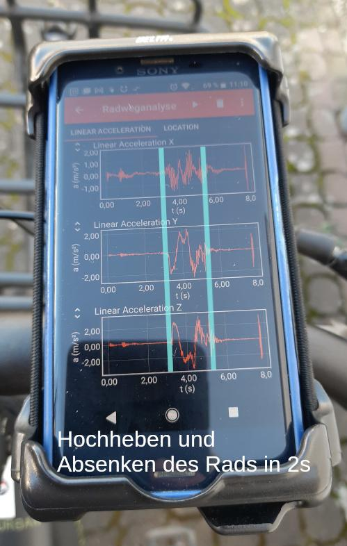Auf dem obigen Fotos des Smartphone-Displays kann man eine erfolgte Beschleunigungsmessung nach Hochheben und wieder Absenken des Rades erkennen. Im Bild ist der Start und das Ende des Hebevorgangs mit zwei blauen Linien markiert.
Das Smartphone selbst ist ein Xperia X Compact der Firma Sony, gekauft im Jahr 2016. Die Abtastrate seines Beschleunigungssensors beträgt etwa 200Hz, was bei einer Fahrgeschwindigkeit von 20km/h einer Auflösung von etwa 2,8cm entspricht. Weiterhin besitzt das verwendete Xperia einen Empfänger für GPS, der etwa einmal pro Sekunde ausgelesen wird. Damit resultiert eine etwa zwei Kilometer lange Fahrt von 6 Minuten Länge in zwei Dateien mit einer Gesamtgröße von etwa 4,2MB.
Datenaufbereitung und Analyse
Nach einer Messung mit phyphox liegen die Daten des Beschleunigungs- und des GPS-Sensors in zwei getrennten Tabellen vor. Über ein selbst geschriebenes Linux-Script ist es möglich, diese Daten in eine Tabelle zusammenzufassen und in eine GPX-Datei umzuwandeln, die wiederum von existierenden Programmen grafisch dargestellt werden kann. Das Skript für die Umwandlung steht zur freien Verwendung und Weiterentwicklung auf GitHub zum Download bereit.
Weil die Auslesefrequenz des Beschleunigungs- und des GPS-Sensors unterschiedlich sind (im verwendeten Smartphone etwa 200Hz und etwa 1Hz) werden die Daten mit obigen Skript zunächst resampled. Das bedeutet, dass jedem Messpunkt der Beschleundigung durch lineare Interpolation eine Koordinate zugeordnet wird. Dadurch erhält man eine Anordnung der Beschleunigungswerte a_z entlang der zurückgelegten Fahrrad-Strecke.
Die Datenpunkte werden dann zur Anzeige auf dem Bildschirm in eine GPX-Datei umgewandelt. Die meisten dafür genutzten Programme können auch Höhenangaben in den GPX-Datein auswerten. Im Falle der Radweganalyse sind diese jedoch durch die vom Smartphone erhaltenen Werte des Beschleunigungssensors ausgetauscht. Wenn also in den Programmen von Höhenangaben in Metern die Rede ist, so handelt es sich nach der Aufbereitung der Daten durch das radweganalyse-Skript tatsächlich um Beschleuningswerte in m/s².
Neben der bloßen Umwandlung in ein anderes Format lässt sich mit den Rohdaten natürlich auch noch Datenanalyse betreiben. Hierfür wurde ein Python-Skript erstellt, welches nach maximalen Beschleunigungswerten innerhalb eines bestimmten Zeitfensters sucht und diese in eine separate Tabelle speichert. Diesen Werten können über ihre Zeitstempel wiederum Koordinaten des GPS-Sensors zugeordnet werden. Somit wird eine besonders "schlechte" Wegqualität schnell identifizierbar. Weitere Datenauswertungen, wie zum Beispiel Mittelwertbildung zur Erfassung der durchschnittlichen Qualität des Radwegs sind denkbar. Siehe hierzu auch das Kapitel Erkenntnisgewinnung aus dem bereits oben erwähnten Artikel der "Fahrrad Zukunft".
Weiterhin wurde das Analyse-Skript so erweitert, dass man das Zeitfenster der gemessenen Daten einschränken und eine kleinere GPX-Datei erzeugen kann. In den Detail-Diagrammen äußert sich das so eingeschränkte Zeitfenster durch einen kleinen Bereich der x-Achse von nur wenigen Metern. Diese Funktion wurde bei einigen der unten folgenden Diagramme genutzt.
Ergebnisse
Um ein signifikantes Beschleunigungsereignis zu untersuchen, wird zunächst eine Fahrt bei etwa 10 Kilometer pro Stunde über eine abgesenkte Bordsteinkante von etwa 2cm Höhe durchgeführt und ausgewertet. Dabei startet der Weg von einer Straße aus, die relativ eben ist.
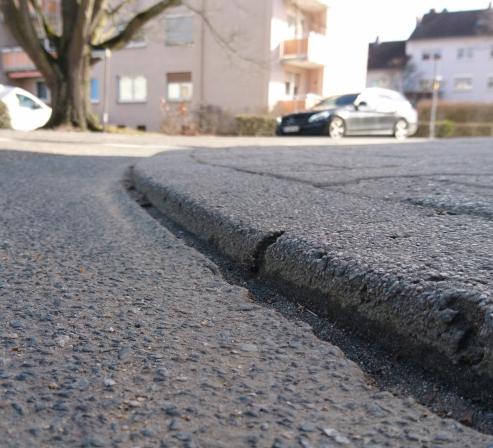Nach Umwandeln der gemessenen Daten in eine GPX-Datei wird deren Inhalt mit dem Programm GpxSee grafisch wiedergegeben. Im oberen Teil der Abbildung sieht man den als roten Pfad dargestellten, zurückgelegten Weg. Der Startpunkt ist mit einem roten Kreuz markiert. Die Fahrt führt über die Uhlandstraße hinweg auf den Gehweg eines angeschlossenen Parkplatzes mit der abgesenkten Bordsteinkante. In dem zugehörigen Pfad ist ein schwarzer Wegpunkt eingezeichnet, der die Stelle markiert, an der der Betrag von a_z maximal ist. Dieser Wegpunkt wurde automatisch über das erwähnte Python-Skript identifiziert.

Im unteren Teil der Abbildung ist die gemessene Beschleunigung a_z über die zurückgelegte Wegstrecke abgetragen. Zu beachten ist hier, dass die Beschriftung der y-Achse geändert wurde, da sie vom verwendeten Programm GpxSee als "Höhe [m]" vorgegeben ist. Es wird deutlich, dass im ebenen Bereich der Straße die Beschleunigung a_z wesentlich kleiner als 5m/s² ist. Bei Überquerung der Bordsteinkante springt sie plötzlich auf Werte über 20m/s² bzw. unter -40m/s². Danach geht der Weg in einen gepflasteren Fußweg über. Hier ist a_z etwas größer als zu Beginn der Messung. Weil das Fahrrad abgebremst wurde, gehen die Messwerte nach etwa 12m gegen Null.
Eine verbesserte Straßenquerung
In der Stadt Langen (Hessen) wurde im Jahr 2021 im Zuge des barrierefreien Umbaus der Bushaltestelle Ludwig-Erk-Schule auch eine angrenzende Straßenquerung erneuert. Im Bild unten kann man einen Vergleich des alten und neuen Zustands sehen. Der Weg (im Bild von links nach rechts führend) führte dabei über eine abgesenkte Bordsteinkante von etwa 2cm Höhenunterschied. Durch den Umbau bekam der Übergang zwischen beiden Straßen ein verbessertes, flacheres Profil, sodass er auch mit kleinen Rädern leicht befahrbar wurde.
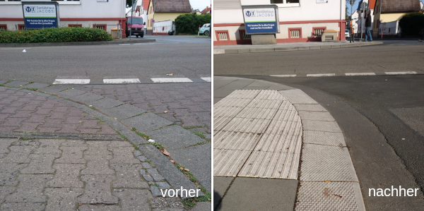Die Fahrt mit dem Fahrrad über diese Stelle fand im August 2020 und im Februar 2022 statt. Im unten stehenden Diagramm kann man deutliche Unterschiede zwischen den Kurvenverläufen von a_z erkennen. Während es vor dem Umbau einen regelrechten "Schlag" bei der Fahrt mit Werten über 60m/s² gab, so ist der maximale Wert von a_z nach dem Umbau um etwa 2/3 kleiner. Eine sehr erfreuliche Tendenz.
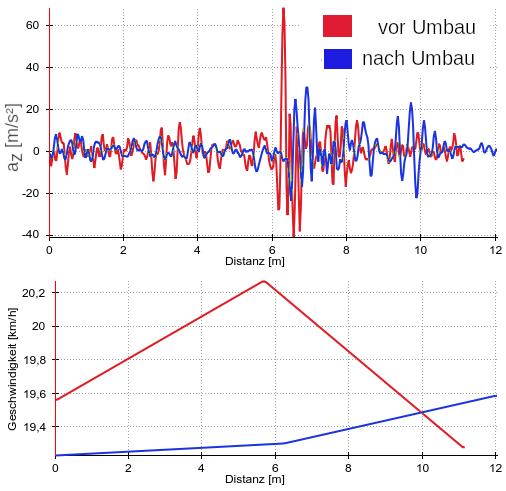Wichtig für den Vergleich zwischen beiden Messungen ist, dass die Geschwindigkeit nahezu gleich ist. Andernfalls würden sich die auftretenden Beschleunigungswerte auch bei gleichem Fahrbahnprofil zu sehr unterscheiden. Aus diesem Grund ist im unteren Teil des Diagramms die gemessene Geschwindigkeit während der beiden Fahrten aufgetragen. Diese ist mit ca. 20,2km/h und 19,3km/h sehr ähnlich (ca. 4,5% Unterschied vom größeren zum kleineren Wert). Beide Messungen lassen sich daher gut miteinander vergleichen.
Radweganalyse des neuen Teilstücks des FRM1 Langen und Egelsbach
Im Oktober 2021 wurde das neu gebaute Teilstück Langen-Egelsbach auf der Raddirektverbindung zwischen Darmstadt und Frankfurt ("FRM1") eröffnet. Der neu gebaute Weg besteht aus einem sehr ebenen, bis zu 4 Meter breiten Asphaltbelag. Der Streckenverlauf folgt genau den selben Wegen, die vorher schon existiert haben, bei denen die Wegqualität jedoch zum Teil sehr schlecht war.
Im Jahr 2020, noch vor der Erneuerung des Radweges, ist der Autor mit dem Rad und aktiver phyphox-App diesen Weg entlang gefahren, startend von Langen aus nach Süden, Richtung Egelsbach. Die Oberlfäche des Weges bestand am Ortsausgang Langen zunächst aus relativ feinem Split, ging nach einer Holzbrücke über den Sterzbach weiter und mündete in eine asphaltierte Straße, den Leukertsweg. Dieser muss jedoch bald wieder verlassen werden. Der Weg führte bis 2020 nun über einen schlecht zu befahrenden Feldweg mit Löchern und groben (Schotter-)Steinen. Eine zügige und kraftsparende Fahrt mit einem Rad war hier kaum möglich. Kurz vor dem Ortseingang führt der Weg über eine Brücke aus hölzernen Querbalken und ging dann in einen asphaltierten Weg über.
Die Analyse der Beschleunigungsdaten hat dabei einige besonders markante Punkte mit großen Beschleunigswerten ermittelt (schwarze Punkte in der Abbildung unten).
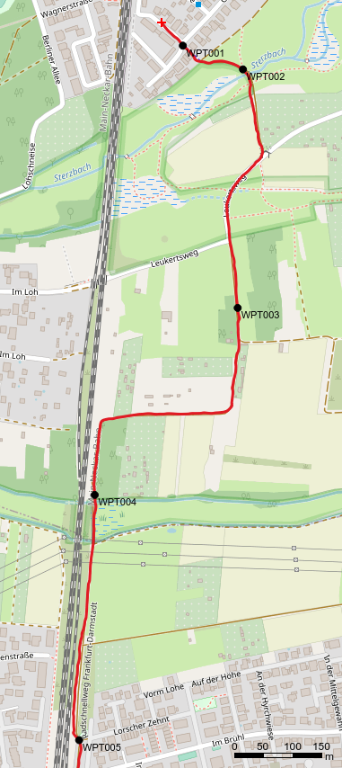Diese Punkte traten bei folgenden Ereignissen entlang der Fahrt auf:
WPT001: Bordsteinkante quer zur Fahrtrichtung
WPT002: Kleine Holzbrücke, davor einige Pflastersteine
WPT003: Feldweg, vermutlich Fahrt über einen Stein
WPT004: Steinkante vor der Fahrt über eine Holzbrücke
WPT005: Unebene Stelle des ansonsten relativ ebenen Radweges
Die Wegpunke sind im unten stehenden Diagramm der Beschleuningungsdaten durch fünf Rechtecke auf der x-Achse markiert. Neben den Messdaten von 2020 in blau sind in rot die Messdaten aus dem Jahr 2022 dargestellt, nachdem der Radweg erneuert wurde. Die Messung und Auswertung fand mit dem gleichen Setup wie im Jahr 2020 statt.
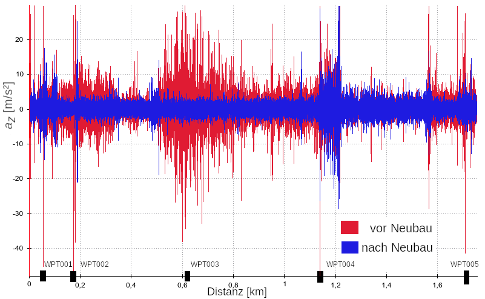Die Verbesserung der Oberflächenqualität ist mehr als deutlich zu erkennen, denn die Schwankungen von a_z vor dem Neubau sind nach dem Neubau deutlich kleiner geworden, gerade im Bereich zwischen 0 und ~350m (vormals Split) sowie zwischen ~500m und 1100m (vormals Feldweg). Auch sonst haben sich die Maximalbeträge der Beschleunigung a_z deutlich reduziert, bis auf den Bereich der nicht erneuerten Holzbrücke um etwa ~1200m im Diagramm.
Im Folgenden sollen die ersten drei identifizierten Wegpunkte genauer betrachtet werden. Dazu ist der Autor die betreffenden Stellen nach dem Radwegneubau zweimal entlang gefahren - einmal mit näherungsweise der selben Geschwindigkeit wie vor dem Umbau, und ein zweites mal mit einer höheren Geschwindigkeit. Letzteres, um den Effekt von unterschiedlichen Geschwindigkeiten auf die Beschleunigung in z-Richtung zu untersuchen.
Wegpunkt WPT001
Bei Wegpunkt WPT001 handelte es sich vor dem Umbau des FRM1 um eine Bordsteinkante quer zum Radweg (siehe Foto), nach dem Umbau war diese nicht mehr vorhanden. Der neue Weg wurde mit einer Asphaltschicht und farbigen Markierungen ausgestattet.
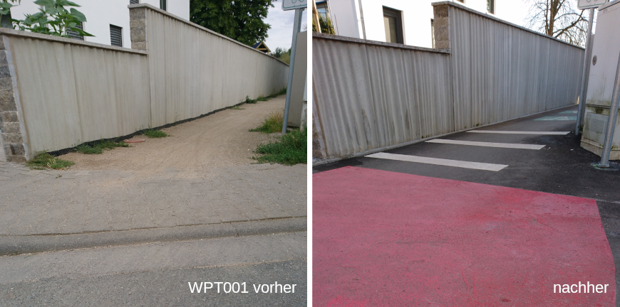Im unteren Diagramm zeigen die Messdaten eine klare Verbesserung zur Situation vor dem Radwegneubau, wo bis zu -40m/s² (rote Kurve) gemessen wurden. Der starke einmalige Ausschlag ist wie zu erwarten verschwunden.
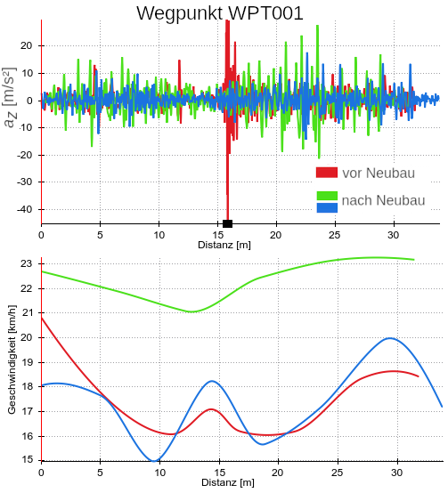Interessant an den neueren Messungen ist die Abhängigkeit von a_z von der Fahrgeschwindigkeit. Während die blaue Messkurve in etwa bei der selben Geschwindigkeit wie vor dem Umbau aufgenommen wurde, war die Geschwindigkeit bei der grünen Kurve höher. Es zeigen sich hier auch höhere Beträge von a_z, die wahrscheinlich den farbigen Markierungen auf dem Radweg zuzuordnen sind. Allerdings sind die Ausschläge immer deutlich kleiner als vor dem Radwegneubau.
Wegpunkt WPT002
Der zweite Wegpunkt mit hohem Betrag von a_z wurde im Bereich der Brücke über den Sterzbach detektiert. Vor dem Neubau bestand diese Brücke aus etwa 3 Meter quer zur Fahrbahn liegenden Holzbalken und einem kurzen Abschnitt aus Pflastersteinen davor. Seit dem Umbau geht der asphaltierte Weg vor der Brücke über in nah aneinander liegende Beton-Träger (siehe Foto).
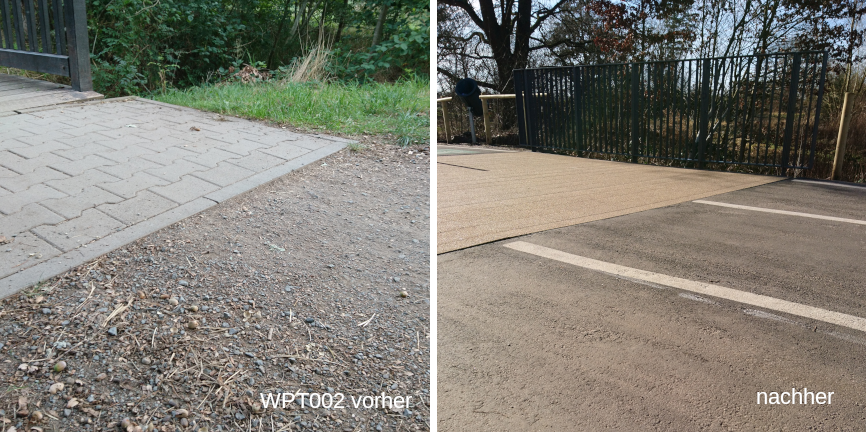Das Diagramm der Beschleunigung a_z zeigt vor dem Umbau in rot zwei deutliche Ausschläge im Bereich von 11m und etwa 18m. Nach dem Umbau haben sich die Ausschläge vor allem im Bereich um 11m verringert. Zwischen beiden Ereignissen sind die Ausschläge nach dem Umbau jedoch in etwa genauso hoch wie vorher. es sei hier bemerkt, dass die Ausschläge mit einem Maximalbetrag von etwa 10m/s² immer noch relativ klein sind und sich sich aus der etwas rauen Oberfläche der Brücke ergeben.
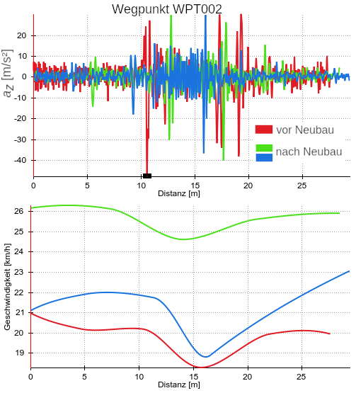Wegpunkt WPT003
Der wohl deutlichste Unterschied zwischen vorher und nachher dürfte wohl im Bereich des ehemaligen Feldwegs zwischen Langen und Egelsbach sein. Im unteren Bild ist der aktuelle Zustand mit glattem Asphalt und erfreulich breiter Fahrbahn zu erkennen. Vor dem Umbau gab es hier nur einen Feldweg aus relativ groben Split, einigen Schottersteinen und vielen Löchern, die es mit dem Rad zu umfahren galt (kein Bild vorhanden).
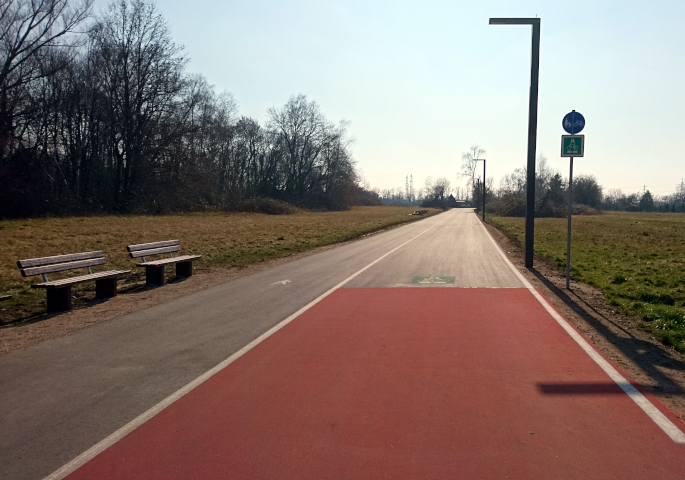Die vormals inakzeptable Wegqualität und ihre Verbesserung ist unschwer an den jeweiligen Beträgen von a_z zu erkennen. Außerdem sieht man, dass der maximale Betrag von a_z nach dem Umbau unabhängig von der Fahrgeschwindigkeit ist. Ein deutliches Zeichen für eine hervorragende Radwegqualität.
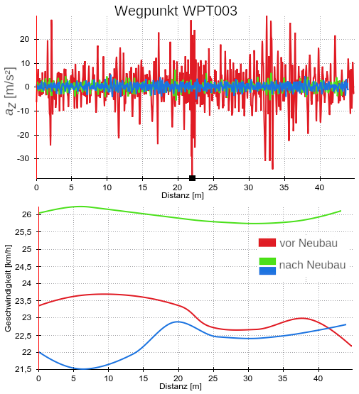Zusammenfassung und Ausblick
Wie die obigen Messdaten und Analysen zeigen, ist es ohne weiteres möglich, mit einem ganz normalen Smartphone die Radwegqualität über die Nutzung des Beschleunigungs- und des GPS-Sensors zu untersuchen. Dies kann darüber Aufschluss geben, an welchen Stellen eines Radwegs Möglichkeiten der Verbesserung schlummern. Sogar die erhöhte Radwegqualität nach einem Umbau kann leicht quantitativ nachgewiesen werden.
Derzeit besteht der Prozess der Datenanalyse noch aus einem relativ aufwändigem Prozess (Datenexport und Analyse am PC). Eine Vereinfachung über eine spezielle Radweganalyse-App könnte viel mehr RadfahrerInnen zum gemeinsamen Messen animieren. So eine App könnte dann schon direkt nach der Fahrt verbesserungswürdige Stellen identifizieren. Dies übersteigt aber derzeit die Fähigkeiten des Autors. Zu beachten wäre bei so einer App, das ein direkter Vergleich zwischen den Messungen verschiedener FahrradfahrerInnen einige Unsicherheiten birgt: Nicht nur die Geschwindigkeiten können sich unterscheiden, sondern auch die Bauform des Rades, der Reifendruck, die Befestigung des Smartphones am Rad, die Art der Sensoren, usw. Nicht zuletzt ist der kleine Auflagepunkt des Fahrradreifens auf der Straße ein Unsicherheitsfaktor: Schon wenige Zentimeter rechts oder links an einem Schlagloch vorbei macht dieses für die Messung "unsichtbar".
Aber warum muss es unbedingt eine Messung mit dem Smartphone sein? Auch ohne könnte es gehen. Denn der Einbau eines Beschleunigungssensors in den OpenBikeSensor, ein Gerät zur Messung von Überholabständen zwischen Autos und Fahrrädern, wäre möglich. So würde der massenhaften Analyse der Radwegqualität kaum noch etwas im Weg stehen und könnte einen wertvollen Beitrag für die Verbesserung der Radweginfrastruktur leisten.
Technische Feinheiten - Synchrone GPS- und Beschleunigsmessung mit dem Smartphone
In der App phyphox wird beim Datenexport für jeden ausgelesenen Sensor eine separate Datei erstellt, mit Messwerten und relativen Zeitstempeln. Der jeweils erste Zeitstrempel von 0 Sekunden ist dabei der, ab dem der erste Messpunkt aus dem Sensor extrahiert wurde. Während der Beschleunigungssensor sofort nach dem Start einer Messung ausgelesen wird, muss der GPS-Sensor zunächst eine Positionsbestimmung vornehmen. Erst danach kann die Änderung der aktuellen Position gemessen werden. Dies kann mehrere Sekunden dauern. Dieser Unterschied führt dazu, dass die beiden Dateien unterschiedliche tatsächliche Startzeitpunkte aufweisen. Somit wäre es nicht möglich, den Messwerten des Beschleunigungssensors die richtigen Positionen des GPS-Sensors zuzuordnen. Bei einer Zusammenfassung der Daten zu einer GPX-Datei führt dies dazu, dass die gemessenen Beschleunigungswerte systematisch verschoben wären.
Dieses Problem lässt sich nur dadurch umgehen, dass man die App phyphox und die Messung darin erst dann startet, wenn das Smartphone eine stabile Verbindung zu mehreren GPS-Satelliten aufgebaut hat. Dafür hat der Autor die App "GPS Locker Prime" (einmalig kostenpflichtig, kostenlose Version mit Werbung erhältlich) verwendet. Mit dieser App ist es möglich, eine stabile GPS-Verbindung mit dem Smartphone aufzubauen, und erst dann eine beliebige andere App zu starten.
Im unteren Bild ist der Versatz zweier GPS-basierter Messungen der Beschleunigung a_z während der Fahrt mit dem Rad über ein Hindernis aufgetragen. Zu sehen ist, dass das selbe Hindernis um etwa 15 Meter versetzt im Diagramm durch zwei starke Ausschläge registriert wird.
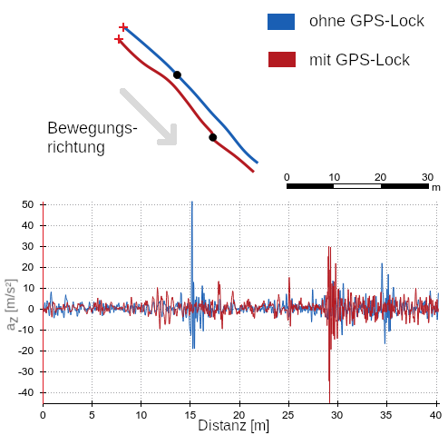Dies zeigt wie wichtig es ist, die Messung mit bereits stabilen GPS-Signal im Smartphones zu starten. Nur so lässt sich das gemessene Signal des Beschleunigungssensors korrekt auf dem Kartenmaterial abbilden.